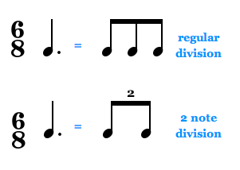
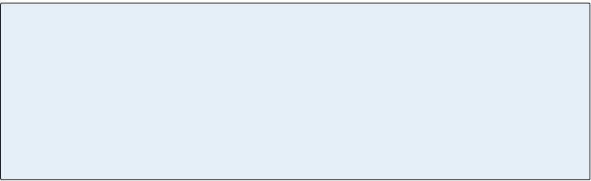

-
Chapter 4
Complex Rhythm
Music notation is capable of describing rhythms much more complex than those seen in Chapter 3. The tie can be used to introduce syncopation or to create note lengths that can’t be expressed with a single symbol, and the triplet and tuplet allow time divisions outside those of the current meter.
Some extremely difficult rhythms are found in music from
the late 14th century school of Avignon. This is a highly syncopated piece by Phillip of Caserta. The changes of color are in effect changes of meter. -
47
Section 1
Syncopation
Syncopation Syncopation An alteration of the usual metric accent that places emphasis on beats which are normally unaccented. Syncopation emphasizes the offbeats, usually by beginning a note on an offbeat or a weak beat and sustaining it over a stronger beat. Ties are frequently used to create syncopated rhythms. is something you probably know well
without being aware of it. It gives vivacity to rhythm and is
an important part of jazz and popular music, as well as being
a frequent device in the classics. Syncopation results from moving the usual metric accent, placing emphasis on beats which are normally unaccented.One way to emphasize the weak beats is by deemphasizing the strong beats. When a note begins between beats or on a weak beat and is held over through a stronger beat, the effect could be described as “starting the note early.”
In the example shown here, beat two is held over beat three resulting in a syncopated rhythm.
The Tie
Ties Ties A curved line that joins two adjacent notes of the same pitch so that they sound like one. Ties are used to join notes within a measure and they’re the only way to extend the length of a note over a bar line. Ties are also used to create note values that can’t be made with dots: e.g. a quarter tied to a sixteenth note. Ties are frequently used to create syncopated rhythms. are often used in creating syncopation. The tie is a curved line that joins two notes of the same pitch so that they sound like one.
Ties serve several purposes. Sometimes you can use a tie to mean the same thing as a dot:
Movie 4.1 Compare these two rhythms
One type of syncopation results from giving emphasis
to a note on a weak beat, like the F on beat 2 here.Figure 4.1 A tie joins two notes of the
same pitch and can be used in place
of a dot. -
48
The tie can also be used to create notes of a length that can’t be expressed any other way, such as the quarter plus sixteenth in Movie 4.2. And ties are the only way to continue a note over a bar line.
Another important purpose of the tie is to make the beat groupings clear within a measure, as in Movie 4.3.
Here the tie helps you see how beats one and two are divided.Movie 4.4 The use of ties in “De Colores” helps show the beat groupings
Movie 4.2 Two uses for ties
Movie 4.3
Using ties to show the beatBelow, the second measure of “De Colores” could be written with a dotted quarter note instead of a tie and it would sound the same, but it would confuse the eye. Breaking that into a tied pair shows that the 6/8 measure divides in two parts.
-
49
Accenting The Weak Beats
Bach’s Invention No. 6 begins with syncopation: the upper notes begin offbeat and are carried over each beat. Ties are used to maintain the offbeat rhythm through the measure lines.
The lower voice sounds the normal metric accents of 1 and, 2 and, 3 and, while the upper voice does the opposite – 1 and, 2 and, 3 and.
Usually “syncopation” refers to passages where notes are held over from a weak metric position to a strong one, as above. But a rhythm that accents the offbeats by making them louder rather than longer can also be called syncopated. Offbeats are punctuated with both accent marks (>) and loud chords in the example below.
Movie 4.5 Using ties to hold over the beat in Bach’s Invention No. 6
Movie 4.6 Syncopation by accents in Stravinsky’s Le Sacré du Printemps
-
50
When syncopated notes are held over to the next beat the beat groups will be easier to see if you
use ties. But simple patterns such as syncopated quarter notes are so common that they are
often written without ties, as in the beginning
of Mozart’s Piano Concerto No. 20, K. 466:Hemiola
Hemiola Hemiola A special type of syncopation that occurs in a triple meter when beats are grouped in twos; for example, two measures of 3/4 time in which you hear three groups of two beats instead of two groups of three. is a special kind of syncopation. You could use the term for any syncopation that causes the effect of duple meter within triple meter, or even vice-versa. Strictly speaking, though, it’s a passage in triple meter in which beats are grouped in twos, for example two measures of 3/4 time in which you hear three groups of two beats instead of two groups of three.
Movie 4.7 A syncopated pattern written without ties
Movie 4.8 An example of hemiola in Mozart’s Piano Sonata, K. 332
The beat markers show where the accents create the effect of three two-beat measures in place of two three-beat measures.
-
51
Review 4.1
1. Syncopation alters metric accents, placing emphasis in places that are normally unaccented. A note that begins in a metrically weak position and sustains through a metrically strong point produces syncopation; so does an accent placed in a
metrically weak position.2. A tie joins two notes of the same pitch so that they sound like one. Ties can be used to hold notes over
a bar line or to make notes of a length that can’t be made with dots, such as a quarter plus a sixteenth. Ties are also used to visually clarify the beat groups
in a measure.3. Hemiola is a type of syncopation that creates the effect of duple meter within the context of triple meter, or vice-versa. Strictly speaking, it’s a passage in triple meter in which beats are grouped in twos rather than threes. For instance, three groups of
two rather than two groups of three.Suggested Practica Musica Activities 4.1
• Reading Syncopation: This activity is similar to
earlier activities in reading rhythm, but the examples
will include more complex rhythms that involve syncopation.
-
52
Section 2
Triplets, Duplets, and Tuplets
We’ve seen that undotted notes divide in twos, fours, eights, etc. What if you want
to fit three equal notes into the time of a single undotted note? You can do it by marking the group with the number “3,” as in Figure 4.2.Notes marked this way have 2/3 their normal time value, so that three will play in
the time of two. For example, three eighth notes in the time of two normal eighths.The grouping is called a triplet Triplet The division of an undotted note into three equal parts. For example, a quarter note divides into two eighth notes or three triplet eighth notes which are played in the time of two normal eighth notes. A triplet grouping is marked with a “3.” A triplet grouping may include rests, or, instead of three eighth note triplets, two notes of unequal value such as a quarter (equal to two triplet eighths) and an eighth. , and is particularly effective when used as Mozart
does below, in combination with duple rhythm so that you hear the contrast of three against two:Movie 4.9 Triplets in Mozart’s Piano Concerto, K. 467
Figure 4.2 Quarter note, eighth note and sixteenth note triplets
-
53
A triplet doesn’t have to contain three notes – it can be any combination of notes and rests whose values add up to three played in the time of two, as in Figure 4.3.
Figure 4.3 Eighth note triplet groupings
Movie 4.10 Quarter note triplets combined with ties (Allegro, Brahms, Symphony No. 3)
Triplet rhythms can also be varied with ties as in this example from Brahms’ Third Symphony (Movie 4.10). Notice that the bass accompaniment in the Brahms (not shown, but heard) is moving in even quarter notes, creating again a two-against-three effect:
Suggested Practica Musica Activities 4.2
• Reading Triplets: Practice reading music
examples with triplet rhythms.
-
54
Figure 4.4 A duplet is a 2 note division in compound meter
Figure 4.5 Duplets can also be
written using dotted notesMovie 4.11 Duplet groupings in Debussy’s Clair de Lune
The opposite of a triplet is the duplet Duplet A rhythmic grouping, marked with a “2,” found in compound meters where the dotted note divides into 2 equal notes instead of 3. In 6/8 meter two duplet eighth notes are played in the time normally taken by 3 eighth notes, i.e., in the time of a dotted quarter.
(A duplet can also be notated with two dotted notes: e.g. 2 dotted eighth notes are equal to a dotted quarter.) , in which two are heard in the time of three. Duplets are usually found in compound meter, where the beat is carried by dotted notes that normally would divide in three. For example, in 6/8 meter two duplet eighth notes are played in the time of a dotted quarter.Duplet rhythm can be notated literally, using dotted notes instead of duplet notation. Both ways of writing a duplet
are shown in Figure 4.5.55
The word tuplet Tuplet A general term for all irregular groupings where the beat is divided into a different number of equal parts than is normal for the meter. For example, you can divide a half note into 5 tuplet eighth notes to be played in the time of four normal eighth notes. The number “5” above or below a group of notes indicates a quintuplet and so on. can be used as a general term for all irregular groups where the beat is divided into a different number of equal parts than is normal for the meter. For example, you can divide
a quarter note into five tuplet sixteenth notes to be played in the time of four normal sixteenth notes. A quintuplet is marked
with a “5” above or below the grouping, and so on.Movie 4.12 Quintuplet and sextuplet groupings
(Enesco, Cantabile and Presto)The performance of large tuplets can sometimes be flexible. Here’s a very large irregular grouping by Chopin, a group of twenty-one sixteenth notes played in the time of twelve:
Of course Chopin didn’t really expect the musician to divide three beats into twenty-one mathematically equal parts! He intended that the pianist should use a free, improvisatory style for these notes. But smaller groups like triplets really must be precise for a good effect.
Movie 4.13 A large irregular group
56
Review 4.2
1. Triplets are used to divide undotted notes into three equal parts. A triplet is indicated by a “3” either with or without a bracket.
2. Similarly, a duplet divides a dotted note into two equal parts. Duplets can also be written using dotted notes.
3. Tuplet is a general term for other irregular groupings, such as the quintuplet, a division in five equal parts.
Suggested Practica Musica Activities 4.3
• Ties and Dotted Notes
• Rhythm Patterns
• Compound Rhythm Patterns
Identify which rhythmic variant of the melody was played.